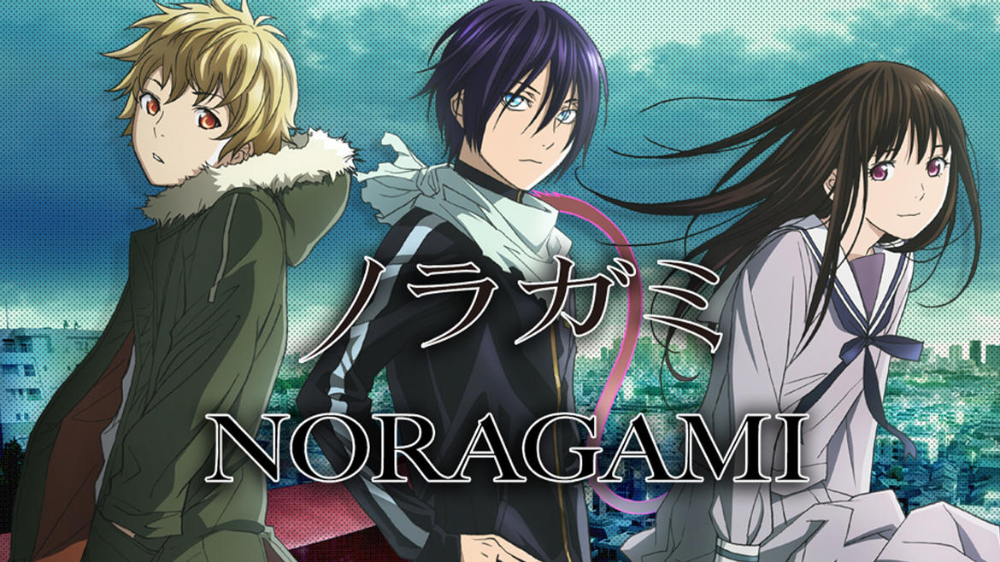

Brittany's Anime List
Series
These are some of my favorite series that I've watched over the course of my loser teenage years.
DanganRonpa
This very well may be my favorite anime and game series out to date. A quick summary is that 15 or so students are trapped in a confined area and force to kill each other, for a stuffed bear's amusement. When you delve futher into the series all together, the story does go over some senitive topics... I advise watching it because of the good story, but watch at your own caution. Also, major heartbreak is in store.

Noragami
I don't think there's an otaku out there who hasn't heard of this rapidly growing anime. Noragami is an anime about a god (all religions just turned away) wanting to becaome worship from everyone in Japan. If you like action and comedy, I strongly recommend this anime!
Inuyasha
This could technically be considered a "childhood bias", but this is one of my favorites. Inuyasha is an anime aboute a girl, Kagome Higurashi, who falls into a well that her family owns. When she climbs out, she finds out she's in Japan's civil-war era! But she finds a half demon to help her find all the peices of a jewel she shattered. If you're into action anime, I stongly recomend this series!

Gugure! Kokkuri-san
This series makes my little heart sing! This is a story about a fox spirit, trying to haunt a moving doll (you'd think I was making this up, but it's true...). As weird as it sounds, this is a comedy, but it's EXTREMLY funny & ADORABLE. If you're in for a really good laugh, watch this anime!

Akame ga Kill
You may have looked at the title and picture and thought, "Man, this is probably a gorey anime, I'm not sure if I wanna watch it..." Here's where I come in to say, no there are no guts shown in this anime (however, killing is another story...). If you don't like things like blood or breatbreak, I wouldn't recommend thin anime. Think of this like a more brutal Danganronpa, but in a free world and you know who killed who.

RWBY
This is the most conversal "anime" in the community. People argue that this is an anime, technically it isn't but it is a huge improvement on America's end (good job)! It's an action/drama series that can be found on Youtube. I have to warn you, If you watch the full series, and watch season 3, be prepared.... No matter how ready you think you are, you're not ready enough...